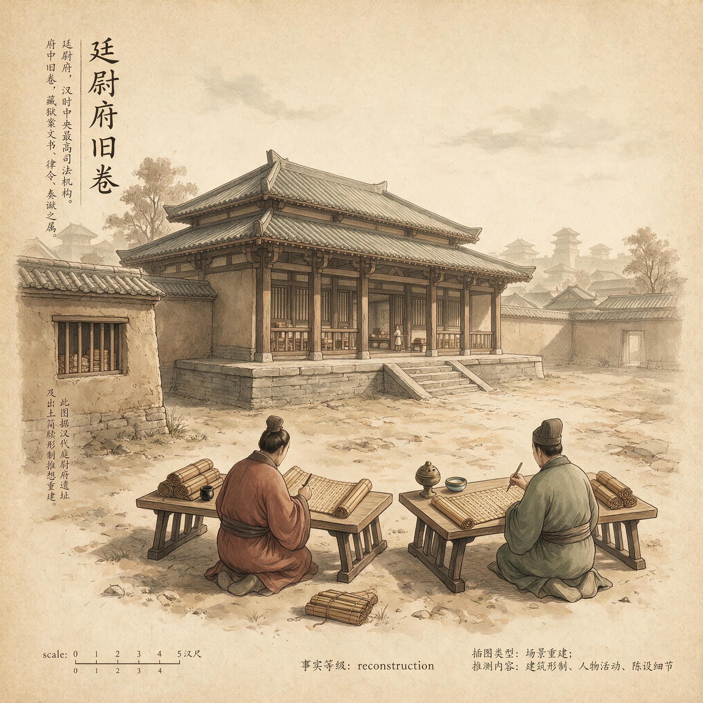

第 20 章
廷尉府的旧卷
廷尉府西库的门是被人从里面拉开的。老吏握着铜钥退后一步，看着门缝里掉下来的灰在晨光中散成薄薄的一层。库房深处很黑，四壁顶到梁上的木架一格一格空着，只有东墙第三排还码着十几捆旧简，麻绳已经吃进竹片的凹槽里，像被什么收紧过。
他走进去，拿油灯照那排简。灯舌跳了两下，把简背上的朱漆题记映出来，那字已经很淡了，淡得几乎认不出。他伸出手，在第一捆和第二捆之间停住了。那捆简的绳结一碰就断。他把它抽出来，夹在腋下，转身往外走。
铜钥回到锁孔里，发出轻轻的一声。他穿过两道门，把旧简送到西北角的一间值房。房里的书吏正站在案前研墨，见他进来，也不说话，只把简接过去，在灯下展开。竹片与竹片撞在一起，声音细而密，像一长串翻不过去的旧账。
书吏看了一会儿，从架子上取下一支新笔，蘸了墨，在简末的空行里补上一个字。那字写得很慢，像要刻进竹子里去。老吏站在门口，没动。他听见书吏轻轻吹了吹墨，说：“去请蔡侯。”
请蔡侯，三个字说得极轻。可就是从这一刻起，那扇关了许多年的库门等于重新开了。
同一个早晨，蔡伦正在尚方署的院子里看新纸。纸架搭了三层，最上面那层已经半干，边角微微翘起来，像被风吹过无数遍的旧布。他蹲下身，用手背碰了碰最下一层的纸面，凉意从指骨缝里透进去。纤维还没完全挺起来，再过半日才行。他站起身，拍了拍衣襟。
东墙下的两个舂工正往石臼里添水。一个提桶，一个扶杵，动作都慢。木杵抬到半空时停了一下。那个提桶的舂工往院门方向扫了一眼。
蔡伦没有回头，只听见院外有脚步声移过去，轻得像是怕碰翻了什么。他知道那不是少府的人。少府的人不会来得这么早。他没问。
只是把纸架上凸出来的一角抹平。纸很薄，水汽未消，指尖按下去，能感到整张纸在轻微地吸。那是麻皮和旧布混舂后留下的呼吸。他做了这么多年，这个呼吸一直没变。
少府派来的主簿快要走了。西厢的案上，账册已经重新码过一遍，按年号排成三摞，麻绳横着扎紧。几支算筹斜插在绳结里，像几把不敢拔出来的小刀。
主簿蹲在案前擦一个陶砚。他的袖子卷到肘上，手腕一下一下地转。那动作很慢，像在数什么。蔡伦从窗下过，看见那砚边的水迹已经干了，只留下四道指印。
他说：“主簿，今天还核账吗？”主簿没有抬头，只把砚台翻过来，看了看底。那目光贴着砚底走了一圈，又搁回案上。他说：“该核的都核了。”蔡伦站在窗外，点了点头。该核的都核了，剩下的自然不必再核。这句话本身，就是一份送客令。
几个晾纸的杂役把竹帘搬得比平时更靠墙。竹帘沿着墙根一溜排开，通风的口子全朝北。那样晾出来的纸，边缘容易发脆。蔡伦看见了，只是没说话。
他走回值房，把门半掩。院子里很静，静得听得见纸架最上层那排纸在风里翻翘的声音。那是纸自己的声音，像什么人在远处轻轻翻动一册还没有写字的簿子。
这天夜里，尚方署的灯比往常灭得早。值房里黑着。蔡伦坐在木榻上，背抵着墙，听院子里的风从楮树顶上一阵一阵过去。那棵树是他刚做尚方令那年栽的，如今已经高过房檐。他想起永平末年的那个早晨，衡州耒阳城的官道上站满了人。
朝廷派来的人在城南空地上搭了青布棚，棚下三张案，案后坐着郡里的掾吏。他光着脚站在父亲后面。脚趾陷在碾碎的红土里。
他被选中那年十二岁，被人带进驿馆。脱衣、洗身、换上一件过于宽大的粗布衫。门帘掀起时，他回头看了一眼。父亲已经走了。官道上只剩那道青布棚，像一块撕下来的天。
他当时不知道被选中的理由。父亲是铁官，家里多一口饭，他年纪合适，身体没有残疾。这些条件合在一起，就把他从耒阳连根拔起，扔进洛阳。那不是谁在害他，也不是谁在救他。他只是被制度看见了。
制度不记得孩子，只记得空缺。有十二岁的空缺，就选十二岁的孩子。有尚方令的空缺，就选会做器物的人。有替罪的位置，就选动弹不得的人。制度没有恶意，也没有怜悯。它只是永远在补位。
现在，它又来了。这一次补到他头上。所以在那个夜里，蔡伦没有睡。他摸黑走到案前，从盒里取出一方旧布，慢慢地擦手。手不脏。可他还是擦了。一块一块地擦，从指尖擦到腕骨。
那动作里没有慌张，只有一种不属于他的安静。他擦完了手，把旧布叠好，放回盒里。
接着他从袖中抽出一片干透的麻絮，放在案上。麻絮散着细小的纤维，在黑暗中几乎看不见。他看不见，也知道它在。
那是他离宫时还带在身上的习惯。尚方令这么多年，他身上总有一点麻。不是工具，不是原料，只是一点麻。人总得有点什么。
三天后的辰时，门房来报。廷尉府一个书吏进了角门，径直走到值房前，递上木牍。木牍上没有封泥，只用麻绳捆了一圈。蔡伦接过来，展开。牍上只有两行字：建初年间宋贵人一案，蔡伦宜到廷尉府自言之。他看了两遍，把木牍扣在案上。
那书吏站在门口，没有走。蔡伦说：“今日去吗？”书吏躬了躬身：“府君说，蔡侯方便，今日即可。”声音很平。蔡伦看了看他。年轻，面生，腰带束得很紧，像一早就被派来跑这趟差。
他忽然想起自己初入宫时，也有这样一个清晨。那时候传他来的是掖庭令，说的也是“今日即可”。他跟着领路的宦官穿过永巷，石子路在脚下嚓嚓地响。他当时只想，原来宫里的路这么窄。
窄得两个人并排走都不行。现在这条从尚方署往北走的路，依然窄。他走在前面，书吏跟在身后。街上的人刚刚多起来，运水的车子轧过石板，吱呀一声长过一声。有人在肉肆前剁骨，声音闷而密，像在捶打什么。
蔡伦走得不急。他看见北宫阙楼上的瓦当在晨光里闪。那些瓦当有龙纹，有云纹，有他做过的纹样。尚方监造过一批新瓦，他用铁模压出云气纹，嵌在宫城东角的望楼檐口。如今还在。
他忽然想，这些不会消失的东西，都不是他的。纸会朽，瓦会碎，木牍会烧掉。会留下的，是那卷旧简上的字。它们不吃不喝，却活得比谁都长。
廷尉府的门槛是整石凿的，被无数双脚磨得中间凹进去。蔡伦抬脚跨过去，鞋底在凹槽里一滑。他扶住门框。那门框很厚，漆皮脱落，露出里面发黑的木。他松开手，走进院子。庭中那棵槐树叶子已经黄了，被风吹得旋起来，落在正堂前的阶上。
他没有停，跟着书吏转进东侧的值房。门开着。屋里已有三人。一个坐在案后，深绛官服，长脸，高额。两个站在两旁，都拿着简。门外又站了两个吏卒，背朝着他。
“蔡伦。”坐在案后的人开口。他没有说“蔡侯”。这个名号省了。省得极自然，像从来没有过。蔡伦站在案前，抱了抱拳。对方没有还礼，手里正翻着一片竹简，翻得很慢。屋里很静。蔡伦听见自己的呼

汉代廷尉府遗址或复原图
AI 生成插图，非史实影像。
吸。一吸一吸，像有人在极远处舂纸。他忽然觉得，这地方和舂房一样。都是一下一下，把东西捣碎，再用来写别的字。“建初年间的旧案，你在其中。”那人把竹简放下，抬起头，“宋贵人巫蛊事，你还记得多少？”
蔡伦没看那简。他看向那人的手。手很干净，指节细长，指甲修得齐整。那只手放在展开的简上，不轻不重，像按着一个人的脉。“你想问什么？”蔡伦说。他的声音比预想的干。“问你知道的。”那人说，“当年奉谁的命，怎么做，人怎么死的。旧卷上都有。但我还是想听你自己说。”
“奉窦太后命。”蔡伦说。屋里的人没有动。站在右边那个拿着简的书吏抬了抬眼皮，又垂下去。案后的人也没有记录。案上没有笔。
蔡伦看出来了。这场问话，本就不需要新墨。旧的还没有干。“怎么个做法？”那人问。蔡伦没有答话。他站在那儿，脚底很凉。那凉从砖面上来，像一层水，慢慢没到脚踝。
他想起建初年间的那个晚上。掖庭偏西的小室，四壁潮湿，灯只点了一盏。他进去时，宋贵人姊妹已经被押来。他受命问话。问巫蛊之物藏在何处，问与谁交通。她们不答。他让人把她们捆起来。
绳是掖庭常备的细麻绳，入宫第一年就见过的。他那时已是小黄门，二十出头，入宫十年。他学过束人的手法，不是从刑官那学的，是从宫里一层层压下来的规矩里学的。湿帛覆面，水是井水，凉得刺骨。他记得自己当时没有发抖。
后来有人端来两盏鸩。他站在门外。屋里没有哭声了。那之后两天，宫里传出死讯。再过几日，刘庆被废为清河王。他记得刘庆被架出去那天，穿着一件旧锦袍，瘦得不像个少年天子。那是章帝的亲儿子。
他站在人群后面，看见刘庆从阶下过，没有看他。那时他以为，这就是宫里最坏的事了。后来才知道，最坏的事会留在自己身上，埋着，等很多年以后再被挖出来。
“我做的，我认。”他说。这几个字从喉咙里出来，像从很深的地方拎上来一个陶罐。
他听见背后的门轻轻响了一下，门缝里漏进一丝风。那风从槐树下来，带着叶子的味道。地上，有一片黄叶从门槛滚进来，停在书吏脚边。没有人去拾。
案后的人点点头，像是对这两个字并不意外。他拿起那根竹简，用指头在简面上一划。那动作里有一种对旧物的怜惜，像摸一件不再值钱的家什。“廷尉府的旧卷，记这些事的人，手很稳。”他说，“你当年做的每一桩，都写在上面。不是别人补写的。是当时就有人在记。”他停了一下，把竹简翻过来，“所以你不是现在才被这条案子抓住。你只是现在才来。”
这就是蔡伦无法绕开的地方。那卷简就是他的自白。他无论现在说什么，都不过是在旧简上加一层新供。他若是辩称奉命行事，旧简上早已记下他亲口说出的细节。他若指认窦太后，那等于把刀尖转向章帝一朝的根基。
如今龙椅上的安帝，正是清河王刘庆之子。刘庆被废，是安帝入继大统的由头。若宋贵人案被翻过来，窦太后成了主谋，那么章帝立窦后的合法性就要动摇。安帝不能碰这个。谁碰谁死。蔡伦看得清楚。
所以这个案子，只能审他。一个行刑的小黄门，一个无根的人。杀了他，旧案就有了交代，旁处干净了。这就是廷尉府要他“自言之”的道理。不需要拷打，不需要新证。只要他站在这里，说出“我认”二字，旧卷上的每一个字就都活了。
死人没有新口供，活着的却可以签字画押。蔡伦这个人的全部政治价值，就在这里。他不是砧板上的鱼。他是一个被重新打开封印的旧器，放在那里，让后来者知道旧案还没有被忘记。可他又不是旧器。他会说话。他一说话，就等于把所有罪都洗进了自己的骨头里。
那些人要他做的，就是自己碾碎自己。用一个朝代的阴暗面，制成一张薄薄的纸，在上面写一个“罪”字。
他的纸，今天没有来。那纸在尚方署。蔡伦忽然想到。那纸最怕的不是火，不是水，是时间。时间会把它浸黄，变脆，最后碎成粉末。可旧简不一样。竹片被烤过，杀过青，能存几百年。它不怕他。怕的是他。
“人怎么死的？”案后的人又问了一句。蔡伦的嘴唇动了一下。那两个字的答案他有过。不是“鸩杀”那两个字。而是他亲眼看见的那两盏杯。杯是陶的，浅沿，里面晃着半盏暗色的水。他那时站在门外。门开着一道缝。他看见一只手把杯端起来。那手很白，细，不是绣过花的手，也不是握过简的手。后来那只手垂下去，碰倒了案上的灯。灯灭了。他再没看见。这就是他记得的一切。不是冷，不是怕。就是那盏灯灭了，屋里彻底黑下去。他想，原来一个人从生到死，就是灯灭的一下。很快。快得来不及知道发生了什么。
“鸩。”他说。周围没有一点声音。那个拿简的书吏把简放回案上，竹片又发出一串细密的响。
案后的人长长地呼了口气，像终于把一件拖了太久的事办完。他说：“宋贵人姊妹服毒自杀。你的罪名，自己清楚。”他挥了挥手，“今日问到这里。廷尉府会再做文书。你先回去。以后，随时听传。”
蔡伦没有动。他忽然想起，建初七年的冬夜，他和另一个小黄门并排走在宫墙下。风从北边来。那个小黄门说：“咱们这样，迟早有报应。”他当时没说话。那孩子只比蔡伦大一岁。
后来那个小黄门死了。死在窦宪和窦家垮台的那个月里。蔡伦有时想，他说得对。报应到了。只是来得太晚，晚到他已经能数得清自己身上每一根与那件事有关的骨头。
他转身往外走。门槛还是那么高。他低头时，看见自己鞋尖上黏着一片槐叶，湿的，像刚从什么人的眼泪里捞出来。他跨出去，没有回头。一直没有。
走出廷尉府，天还亮着。街面上多了一道运土的车辙。几个孩子在城墙根抓石子，一个老婆子坐在条石上卖酸枣。她喊了一声：“枣子，新挑的枣。”声音尖尖的，从蔡伦左边耳朵钻进去，又从右边出来。他走得很慢。每一步都能听见自己身体里有什么东西在松。像一张绷了太久的竹帘突然被取下来，线没断，但已经撑不住原先的形状。
快到尚方署时，他看见东墙外面的那条窄巷里站着一个少府的干吏。那人远远看见他，转身走了。蔡伦没有追。
廷尉府西库的老吏把那捆旧简送出去之后，又回到库房门前站了一会儿。门已经锁上了，铜钥还在他手里，沉甸甸地晃。他做这件事做了二十三年，经手的旧卷不下百捆，每一捆送来时都带着一股味道——不是霉味，是竹片被火烤过、被墨浸过之后留下的那种干烈的气息，像烧过的土，又像凉透的灰。
建初年间的卷子他见过不少。章帝一朝的事情，廷尉府存档最密。那时候窦家势大，窦宪在宫外杀人，窦太后在宫内清洗，每一桩都有人记，每一卷都有人封。封完之后就送进西库，按年号排好，等着某一天被人重新打开。
他知道，这些卷子不会永远睡下去。它们只是在一个朝代的记忆里打了个盹。等新朝廷需要旧事的时候，就会有人来敲门。他以为会是别人来敲。没想到这次敲门的，是廷尉自己。
那捆宋贵人案的旧简，其实不止一捆。西库东墙第三排码着的那十几捆，都是建初七年前后的卷宗。巫蛊案只是其中一桩。相邻的架子上还有废太子刘庆的除封诏书副本、宋氏外戚的籍没名册、掖庭令关于贵人死状的呈文。
这些卷子彼此牵连，像一棵老树的根系，拔出一根就会带起一片。老吏当年入库时翻过其中几卷。他记得那份呈文的措辞极简，只说宋贵人姊妹“惧罪自尽”，没有写怎么个惧法，也没有写怎么个尽法。那行字写得很小，挤在竹片末端，像是写的人不愿意多费笔墨。
但他知道，宫里的事，越是写得简略，背后的事就越大。那些不敢写在简上的东西，都留在活人的记忆里。二十三年过去了，活人一个一个地死。现在剩下的活人里，最有资格记得这件事的，只剩下蔡伦。
书吏在新补的那个字上吹墨的时候，老吏在门口看见了。那个字是什么，他没问。书吏写完之后把简卷起来，重新用麻绳捆好，搁在案角。那一捆简和早上刚出库时已经不一样了——不是形状变了，是分量变了。多了一个字，它就从一个沉默的旧物变成了一件武器。老吏知道这种变化。他见过太多次。旧卷进库时是死的，出库时就活了。而让它活过来的，从来不是墨，是人。是那些需要它活过来的人。
廷尉正堂东侧的值房里，讯问还在继续。那个坐在案后的廷尉副丞姓种，颍川人，永初年间从郡吏升上来的。他审案有一个习惯：不问废话。他来洛阳六年，经手的旧案重审不下二十起，多半涉先帝朝外戚旧臣。那些案子有一个共同点：人已经死得差不多了，剩下几个活着的，也都老得不足以构成威胁。审这些人，不需要刑具，甚至不需要高声。只需要把旧卷摊开，把他们当年做过的事一条一条念出来。念完了，他们就垮了。不是因为怕，是因为累。一个人在同一件事上活了几十年，早就被那件事吃空了。种副丞只要找准地方敲一下，那层壳就会碎。
但他审蔡伦的时候，敲的不是别处，是蔡伦自己认罪的那句话。他做过很多次这样的讯问，极少有人一上来就认。多数人会推，会辩，会把责任一层一层往死人身上卸。死人不会开口，是最好的挡箭牌。但蔡伦没有推。他说“我做的，我认”。这四个字一出口，种副丞就知道，这个人不是不怕死，是已经想明白了自己的死法。他不是在认罪，他是在认命。这种认命里有一种极其冷酷的清醒，让种副丞生出一丝不安。因为一个想明白了自己死法的人，就不会再在别的事上让步。你可以杀他，但你不能再用他的嘴说出你想要的东西。
站在右边的那个书吏把简放回案上时，手腕抖了一下。他不是新手，在廷尉府录供三年，见过拷打，也见过认罪，但他没见过一个人用这样干涩平静的声音说自己三十年前杀过人。那声音里没有悔恨，也没有恐惧，只有一种被时间磨得极薄的坦然。这种坦然比任何惨叫都更让人觉得骨头发冷。他放好简之后，偷偷看了一眼蔡伦的脸。那张脸在晨光里显得很旧，皱纹像干涸的河床，一道一道往鬓角裂去。
但眼睛没干。那眼睛还亮着，像两块被水冲了很久的石头，表面光滑，底下硬。书吏忽然想到，这个人入宫时才十二岁。十二岁的孩子被人从耒阳的官道上带走，阉割，送进宫，在永巷里学着怎么活下去。他活下来了，不仅活着，还封了侯，做了尚方令，造出了让天下读书人都能用的纸。然后现在，廷尉府用他三十年前做的一件事，把他从侯位上拉下来。书吏不知道该说什么。他低下头，把竹简卷紧，麻绳在简身上绕了三圈，每一圈都拉得很直。
种副丞挥退了蔡伦之后，在值房里又坐了一会儿。他把那捆旧简拿起来，翻到最后一支，看那个新补的字。那个字是“斩”。书吏在“蔡伦奉窦太后命鞫问宋贵人姊妹”那一行下面补的。“鞫问”二字后面，原本空着，现在多了一个“斩”。这个字补得极讲究——它没有写蔡伦杀了谁，只写了一个处置结果。
但这个结果往那里一放，就把前面所有的空白都填上了。宋贵人死了，蔡伦活着。死人不会说话，活人就得替死人把话说完。种副丞把简合上，搁回案角。他看看窗外，天光已经转白，槐树的影子从阶上退到了廊下。几个吏卒还在院子里站着，背挺得很直，但脚后跟已经在砖地上来回蹭。
他从案后起身，走到门口，对外面说了一句：“把人看住。不是押，是看。让他待在尚方署，哪儿也别去。”吏卒应了一声，转身往外走。种副丞看着他的背影消失在大门外，才收回目光。他知道，这道命令没有任何实际意义。蔡伦不会跑。一个入宫四十年的人，能往哪儿跑？他的整个生命都在宫墙里面。出了那道墙，他连自己是谁都说不清。
蔡伦回到尚方署之后，那天下午，少府来了一个干吏，什么也没说，只把西厢里那几摞账册搬走了。主簿跟着干吏一起走的，走之前把算筹从绳结里抽出来，一根一根码进布袋。那动作和他擦陶砚时一样慢，像在给什么东西收尸。舂工站在石臼旁，看着干吏的背影穿过院子。他的袖子卷到肘上，手臂上还粘着纸浆，白花花的一片，像脱下来的旧皮。他说：“蔡侯……还造纸吗？”蔡伦站在值房门口，听了一会儿风，说：“把帘子收了。今天不晾。”舂工低下头，把剩下那半挂竹帘从杠上摘下来，折叠，倚在墙角。竹帘弯下去，发出喀喀的响声。那声音在空荡荡的院子里来回弹，撞在东墙上，又弹回来。
晚间，蔡伦一个人坐在值房里。油灯点着，火苗不高，刚好能照亮案上一尺见方。他把那方铁镇纸拿开，露出下面那几页纸。纸已经干透了，原先微黄的纤维泛了白，像被抽去了什么。他揭起最上面那一页，对着灯看。纤维的纹理在光里显出来，横的竖的，交错的，像一张密密织起来的网。他做了这么多年纸，从来不在这个环节看它——纸是用来写字的，不是用来看的。
但今晚，他没有写字，只是在看。看那些麻皮和旧布是怎么在水里被捣碎，又怎么在帘子上重新聚起来，变成薄薄的一层。碎了的东西还能成形，靠的是纤维彼此勾连。可一个人的命，碎了就是碎了，那些碎片不会重新聚起来，只会散在别人的记忆里，等着某一卷旧简把它们重新捞出来。
他把纸放下，走到门口。门半开着，夜风从楮树顶上灌下来，把院子里最后一点纸浆的味道吹散了。那棵楮树的叶子已经落了大半，剩下的几片在枝头抖，抖得很急，像在赶什么。
他想起建初七年的那个冬夜。宋贵人死后第三天，掖庭令派他去清点那间小室里的遗物。他推门进去，里面很冷，冷得像地窖。两个陶杯还搁在案上，杯底残留着一圈暗色的渍，像干了的血。他拿起一个杯，翻过来看杯底。杯底刻着掖庭的印记，那是宫里的东西，不是什么巫蛊之物。那间屋子里没有巫蛊。他清点了三个时辰，翻遍了每一个角落，没有找到任何与巫蛊有关的东西。只有两个空杯，一卷旧帛，几件衣裳。
他把这些东西登记在册，交回掖庭。后来那份册子也进了廷尉府的库房，和今天摆在他面前的旧简放在同一排架子上。他当时就知道，宋贵人是被冤杀的。不是被他冤杀，是被一个更大的东西冤杀。他只是那个东西伸出来的一只手。可手也是手，也会沾血。他不能因为自己不是那颗头颅，就假装这只手是干净的。
他推门进去。院子里，石臼旁横着那根木杵。早上他离开时，杵还是立着的。现在躺在湿泥地上，一头粘了浆。不知是谁碰倒的。没有人扶。他看见两个舂工的房门关着。晾纸的帘子收了一半，剩一半还挂在竹杠上，风吹得唰唰响。那声音一长一短，像什么在催。他回到值房，关上门。案上那方铁镇纸还压着几页新纸。
纸已经不好了，边角因风干得太急而卷起来。他拿起来看。折痕下面，纸面裂开一道细口，像干透的泥。他把它平放回案上，指尖在裂口处按了按。按不下去。有些裂痕，一碰就不可收拾。他不再碰了。院里的光一点一点斜过去。蔡伦坐在那儿，听尚方署的声音一个个消失。
先是舂房的门被谁拉紧，接着西厢的窗子合上，最后是正院的木门，被人从外面轻轻一带。门板合上时，没有响。像一个人屏着气走远了。然后什么都静下来。这种静，是宫里人都会辨认的静。它不是无人。是很多人都醒着，但都决定不出声。这静有一个专门的用途：等人走。蔡伦知道，他还没被谁明令夺职，可尚方署已经提前把声音还给了它自己。
他做了这么多年的器物，到今天才明白，自己也是这官署中的一件。没有用的时候，就收进库房，锁好门。库门一关，连灰尘都比他体面。他坐了很久。久到天黑。